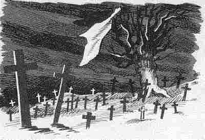

|
1. Tre Langolen hag ar Faouet |
Ur barzh santel a vez kavet; [Hag eñ Tad Rasian añvet] (1845, 1867). 2. Laret eñ-deus d'ar Faouediz: Lakit un oferenn bep miz Un oferenn en hoc'h iliz. 3. Aet eo ar vosenn a Elliant Hogen n'eo ket aet hep forniant, Aet zo ganti seizh-mil ha kant. 4. E bro Eliant heb lared gaou, Ema diskennet an Ankou. Maro an oll dud nemed daou: 5. Ur wregig kozh tri-ugent vloaz Hag ur mab hepken e-devoa, [Gantañ ar vozenn war e skoaz.] (1839) 6. ["Setu ar vosenn 'penn va zi, Pa garo Doue teuy en ti, Ha ni yelo kuit" emezi.] (1845, 1867) 7. E-kreiz Eiant er marc'hallec'h, [plas ar marc'had] (1839) Geot da falc'hat a gafec'h, 8. Nemed en hentig vid ar c'har A gas re varv d'an douar. 9. Kriz vije 'r galon na ouelje, E bro Eliant neb a vije: 10. Gwel'd triwec'h karr tal ar vered Ha triwec'h all eno o toned.
11. Lec'h oa nav mab en un tiad, | Aent d'an douar en ur c'harrad; Hag o mamm baour ouz o charread. 12. O zad a-dreñv o c'hwibanat [c'hwitellat] (1839) Kollet gantañ e skiant vad. 13. Hi a yude, c'halve Doue, Reustlet e oa korf hag ene; 14. - Lakit va nav mab en douar Ha me roy deoc'h ur gouriz koar, 15. A ray teir dro en-dro d'ho ti, Ha teir en-dro d'ho manati. [15 bis. A ray daou dro da dro ho ti Ha pevar euz ho kroaz evelti.] (1839) 16. Nav mab am-boa ganin ganet; Setu gant an Ankou int aet! 17. Gant an Ankou e toull va dor; [hon nor] (1839) Den da rei din ul lommig dour?" 18. Leun eo 'r vered rez ar c'hleuzioù, Leun an iliz rez an treuzoù; 19. Réd eo benniga ar parkoù Da lakaat enno ar c'horvoù. 20. Me wél er vered un dervenn, Hag en he beg ul liñser wenn: Aet an oll dud gant ar vosenn! |

|
P.104 Elian (1) Etre Ar Faouet hag Ar Pont Tre Ar Pont Gwenn hag Ar Faouet Ur zant hag a pre(ze)g vez kavet. (2) En-deus laret d'ar Faouediz "Lakit un oferenn bep miz. (3) Aet eo ar vosenn barzh Elliant. Med n'eo ket aet hep bobulan (forniant?). Na, maro eo seizh mil ha kant!" p.105 (4) E bourc'h Eliant, hep lared gaou, Ema diskennet an Ankou... etc. |
(5) Ur gwregig...etc. (7) E bourc'h Eliant, plas ar marc'had... etc. (8) Nemed war lerc'h ar c'harr Kas an dud varv d'an douar. (9) Kriz vi an galon...etc. E bourc'h Eliant neb a vije (10) Wel 19 karr toull ar vered 18 eno (da) o toned, (11) Weled nav mab en ur c'harrad, (D)re a nav en-deus an tiad (16) Nav demeus memez tiad, Memez mamm he-deus o ganet, (11.3) Weled o mamm toud o charread, |
(12) O zad war-lerc'h o c'hwitelad. Kollet gantañ e skiant vat. (14 bis) Aotroù Sant Roc'h... (14) Lakit ma nav map en douar Me roy d'oc'h iliz ur gouriz koar. P.106 (18) Leun eo ar vered beteg ar murioù. Ma iliz beteg an treuzoù. (19) Red vezo bennigañ ar parkoù Da lakaad eno ar c'horfoù. (20) Me wel toull vered ar perchenn Lakaet d'outi an dilhad gwenn Aet an dud toud gant ar vosenn." |